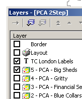
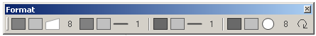
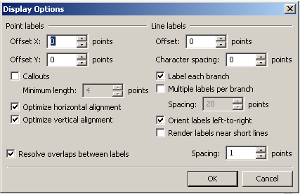
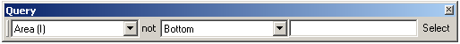

Five low hanging fruit: quick usability fixes Manifold should consider
Over the past four years that I have been using Manifold on a daily basis for almost all of my professional work, I have been able to develop a good understanding of its strengths, idiosyncrasies and weaknesses.
Even so, it is when working with other Manifold users, and specifically teaching Manifold to new users, that one can often find basic usability issues at hand that go unnoticed by more seasoned Manifold users like myself. In this post, I do not want to address larger and more complicated issues, but instead focus on providing a small list of low hanging fruit that could easily be fixed by the Manifold development team:
1) Setting Area of Interest in Layouts
During our training course, almost all new users needed help to understand how to set the area of interestof a layout. The way to change the AOI of a map component in a layout might be powerful, but is complex and well hidden from the user in multiple steps. Most users will upon the creation of a layout from a map, expect the zoom extent of the layout to be the same as what they see in the map component. Confusion sets in when the whole component, or worse a blank page, greets them when they open their newly created layout. “Hey where’s my nice map gone?”
The process then is less than straighforward and involves in total 8 steps and at least as many mouseclicks : right-click on the layout (1) and choose properties (2), set the Scope to Locked Rectangle (3), go back to the map component (4), goto View -> Panes -> Layers (5) (as that pane is hidden by default!), using the Layers Pane, enable the Layout Component extent rectangle (6), resize to the AOI the extent rectangle (7), finally go back to the Layout (8).
Ideally, users would expect after selecting a layout map component that it would behave like a regular map component where users can pan and zoom to set a AOI for the layout.
2) Formatting toolbar
Most new users will stumble over one of the more fundamental idiosyncrasies the Manifold user interface has to offer. The concept of the formatting toolbar relies on the fact that, as opposed to other GIS packages, one drawing can contain different geometry types (points, lines, areas). This is reflected in the formatting toolbar, which always offers the user formatting options for all three geometry types. Because the formatting options look  very similar to one another, new users are often deeply confused and unshure which icon they need to click to influence for example the line foreground color.
very similar to one another, new users are often deeply confused and unshure which icon they need to click to influence for example the line foreground color.

One straightforward solution would be to blank out formatting options for geometry types not currently present in a specific drawing, thus simplifying the toolbar considerably (for a lines only drawing, this would reduce the number of icons from 17 icons down to 4!).
Another possible solution would be to indicate through a small text box what geometry type a set of formatting icons refers to, instead of relying on users to find the right option by hovering over an icon or trial and error.
3) Label Display Options

When working with labels, users are often at a loss on where to change advanced options such as callouts, label overlap conflicts and line label placement. Users in general will look first in the component specific menu, i.e. the Labels Menu, where they wont find a entry for such advanced display options. Instead, Label display options are “hidden from the user” in the generic View Menu. The same applies to for the display options of surfaces and images.
IMHO it would make much more sense to group all options relating to a specific component type in the specific Menu for that component, i.e. the “Labels” Menu or “Surfaces” Menu.
4) Queries in Layouts
A table dragged into a layout results in the creation of a layout component displaying table records. This makes sense to the user and he is pleased to be able to include tabular data into his layout to generate reports.
Unfortunately, the same doesn’t happen for queries dragged into a layout. From Manifold’s perspective, the software sticks to its principles and generates a layout component containing the SQL Query text. 99% of the time, this isn’t the most useful behaviour, and a user would rather expect the query results table to be generated and placed into the layout.
It would be much better if users were given a choice if they wanted the query text, or the query results to be included in the layout. (The workaround I currently employ in this situation is to run a query which generates a table which in turn is included in a layout, which is fine except you can’t update the table easily without deleting it and rerunning the query, thus loosing the layout position).
5) The Query Toolbar
Finally, this one was already touched upon by Muki on his blog, but it is worth repeating his comment here, as the change is the most straightforward to implement on this list:
The way the query toolbar works is that you select a field in the left drop-down list, an operator at the central drop-down and a value in the text box on the right and click on select to see the result. For example, if you enter 5 in the toolbar in the picture, it will lead to a selection of the 5 polygons on the map with the smallest area.
The confusing part of the interface is the ‘not’ between the left drop-down and the central one. For a new user, the interface reads ‘find objects on the map where the field Area (I) are not the bottom X’. The ‘not’ in this case is a toggle button that can be activated to negate the operation that was selected in the central drop-down. Clearly, it would be better if, when not activated, it had the word ‘is’ (Area is the bottom 5) and ‘not’ appeared only when it was active. This is one of the cases where usability enhancement could be carried out in less than a minute of a programmer’s time – and surely makes life less confusing to many novice users…
As you might have guessed, these are only some of the usability issues one can find in Manifold, and I would appreciate any comments here if you can think of others. I have already send in suggestions to Manifold for most of these issues, and I would urge you to do the same if you can agree with my analysis.

generally i agree with all you write (even if I got used to formating toolbar and i do like it :) ) but dont expect much from the manifold developers as those ‘bugs’ are most likely designed to be that way. maybe its not a 100% true quotation but it went something like “this behavior really is intuitive and works as expected, remember- read the manual first” ;)
excellent suggestions! maybe in manifold 9…..
All good, especially the ‘not’ty problem – my laptop’s display makes it very difficult to know if the not is activated or not!?
[...] 5 cosas básicas que debería incluir Manifold 9.0 [...]
My feature request for 1. Setting AOI of Layouts
Concept:
Views are a handy way to control Layout AOI and the present View Pane would be the dialog for control.
Now compare View Pane to Selection Pane. There you have a build-in selections [Invisible Pixel] for images. Carry this concept over to View Pane and have a build-in View [Current View] and use this as the default for a new Layout.
Implementation:
By experiance I definite disapprove ArcViews concept of a “living view” following each later change of viewpoint or scale. Applying the [Current View] by default or by a later selection should internally be interpreted as setting a fixed scope of Locked Center / Scale.
Manifold may be very powerful, and has a low purchase price, but the user interface is extremely poor. There must be a reason for them to work wilfully differently from every other GIS, but I currently can’t seem to work out what it is.
Scruss
Would you care to explain what specifically you find so difficult when compared to other GIS software packages? I often hear comments like this from other GIS users that have been trained in using ESRI or Mapinfo. What then happens is that the user expects functionality to be implemented the same way in Manifold as it is in the GIS package the user is accustomed with.
What this doesnt address then is the overall usability, ie. what way is actually the “best” way to do it. ESRI in my opinion is less usable than Manifold, but because most users have learnt ESRI’s idiosyncracies, they expect the same from Manifold!
The broken activation key system+instructions+support have caused us enough frustration to uninstall the product. Frankly I’m stunned.
Mike,
Again, can you elaborate on the problems you seemed to have? In my experience, the activation system works as it is supposed too. What for me is an issue at the moment is the time span waiting for v9 and thus new activation keys, as I am running out of activations! I dont know if this is what you mean?
Patrick, it’s quite simple: Manifold doesn’t use the term “layer” in the way that every other GIS package does. The fact you have to make separate maps from layers, and then fight to add simple things (like labels: I mean, c’mon!) is a major turnoff.
Manifold may be an exceptionally powerful database backend (well, as powerful as JET “whoops, I had your data a moment ago” can be) but its UI bites. Added to the shock-troops on the support site, it’s been an expensive joke for me. If only QGis could get their QT stability sorted on Windows, it would be my data mangler of choice.
scruss, common. “expensive joke”, “shock-troops” and not using “layers”. I have been trained in ESRI porducts and have used Manifold. Both have their unique issues, but Manifold is quite easy to understand and use. It is readily picked up by our untrained staff. The support people are quite helpful as is the forum. The price is in the $200 range depending on what features you want. It is unhelpful to just blurt out funny little comments, I’m not sure you have enven used the product.
I was using Manifold Universal, which is around $600. I’ve had no formal GIS training, but we inherited using Manifold from a consultant. When I last wrote, I’d been using Manifold for about six months. I’m an engineer, and I basically use GIS as 2D(ish) CAD system for building up constraint layers for power plant location design.
When I load a layer from a data source, I want it to appear on the map I’m working on immediately, thank you. Manifold made that difficult, adding steps like assigning projection, then adding the drawing to the map. Manifold’s tab structure along the bottom of the map is much more cumbersome than having layers on a palette at the side.
I stand by my shock-troops comment about the Manifold forums. I may not have followed the exact checklist required by St.Eric’s “How To Ask Questions The Smart Way”, but one generally doesn’t expect the developer of a commercial product to weigh in in a rude and aggressive manner as a response. The customer may not always be right, but he does pay your salary.
Now that QGIS is very stable on Windows, I haven’t used Manifold for more than a year.